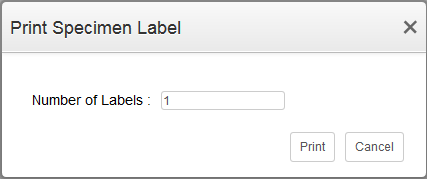
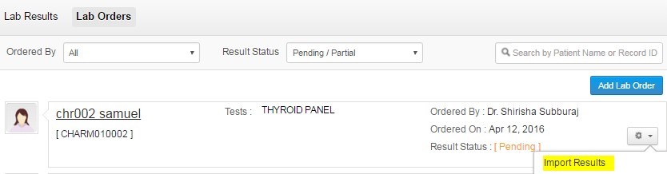
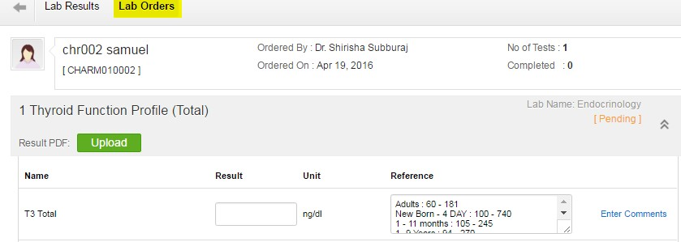

Ordering labs during Consultation
When you want to place a lab diagnostic test during consultation of the patient, follow the steps given below:
- Go to 'Patient' tab
- Select the patient you want to refer for lab test from the patient's dashboard
- Click on 'Open New Consultation'
- Scroll down to 'Recommendations' section and select the 'Lab' tab. You can choose the lab tests, either from 'Instant Add' or 'Choose from Templates' option.
- Choose a lab name
- From the list of tests, select the test(s) you want to order for the patient.
- Click on 'order' and the selected test will get added.
- Click on 'Save' button to save the changes.
Add Lab Order without Consultation
- Go to 'Labs' tab and select 'Lab Orders' section.
- Click on 'Add Lab Order' button.
- You can add a new lab order either by using the 'Instant Add' or 'Choose from Templates' option.
- Follow the steps as in 'Lab order during consultation' to place the lab order.
- Once your lab orders are placed, you can print the lab order by clicking the 'Print' option.
Print Specimen Label
To print the specimen label, follow the steps given below:
- Click on the gear icon against the lab order, for which you wish to print the specimen label.
- A popup menu will appear asking for the number of labels to be printed.

- Enter the number of labels to be printed and click on 'Print'
- Specimen labels will be generated like the one below.
Key-In Test Results
- Select the 'Labs' tab
- click on 'Lab orders'
- select the patient whose lab test results are to be updated
- Click on the 'gear button' and select the option 'Import Results'

- Key in the lab results against each test performed.

- Add comments if any and click on 'Save'
- The updated results will be shown with a green tick mark.
Mark Order as Completed
When the lab test has been completed then the test can be marked as complete.
- Go to 'Labs' > 'Lab Orders'
- Click on the gear icon against the lab order and select 'Mark as Completed' option
- Click 'Yes' on the confirmation dialog.
Print Lab Order
- Go to 'Labs' tab and click on 'Lab Orders' section
- Click on the gear icon against the order and click on 'Export as PDF' option to print the lab order.